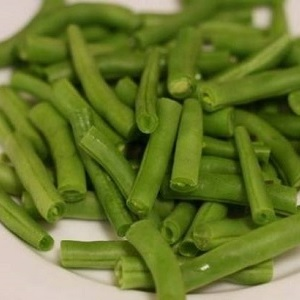

Стручковая зелёная фасоль
Меню

Характеристика товара
Пищевая ценность на 100 граммов продукта:
- Калории: 31
- Жиры: 0,2 g
- Насыщенные жиры: 0,1 g
- Полиненасыщенные жирные кислоты: 0,1 g
- Мононенасыщенные жирные кислоты: 0 g
- Холестерин: 0 mg
- Натрий: 6 mg
- Калий: 211 mg
- Углеводы: 7 g
- Пищевые волокна: 2,7 g
- Сахар: 3,3 g
- Белки: 1,8 g
- Витамин A: 690 IU
- Витамин C: 12,2 mg
- Кальций: 37 mg
- Железо: 1 mg
- Витамин D: 0 IU
- Витамин B6: 0,1 mg
- Витамин B12: 0 µg
- Магний: 25 mg
Подробное описание товара
Зелёностручко́вая фасо́ль — недозрелые стручки фасоли обыкновенной, которые употребляются в пищу. Часто поступают в продажу в замороженном или консервированном виде. Способы приготовления разнообразны — тушение, варка, жарка.